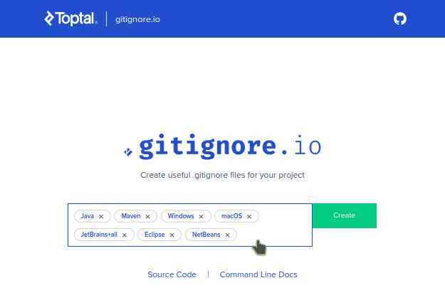

Gitignore.io - Generate your gitignore files in seconds!
Introduction
Writing a good and efficient .gitignore file might be difficult if we consider everything:
- Each IDE / Operating System add its kind of files and pollute your git repository with things which should not be there. (
Thumbs.db,.DS_Store,.project,.idea/,...)
If you plan to share your git account with multiple developers, then many chances are that they will not be on the same OS, IDE than you causing some undesired files being pushed to your git repository.
In order to simplify the life of each contributor of your project (and even yours) having a good .gitignore is important.
To avoid that I personally use a free online tool called gitignore.io which generates a .gitignore file based on some tags that I provide. This is very handy and incredibly fast!
How it works
1) Choose some predefined tags 
2) Click Create, and then you will have a generated content to copy and paste into your .gitignore file similar to this:
# .gitignore
# Created by https://www.toptal.com/developers/gitignore/api/java,maven,windows,macos,jetbrains+all,eclipse,netbeans,visualstudiocode
# Edit at https://www.toptal.com/developers/gitignore?templates=java,maven,windows,macos,jetbrains+all,eclipse,netbeans,visualstudiocode
### Eclipse ### :fire:
.metadata
bin/
tmp/
*.tmp
*.bak
*.swp
*~.nib
local.properties
.settings/
.loadpath
.recommenders
# External tool builders
.externalToolBuilders/
3) Last but not least you can at any time add new tags by using the edit link provided.
In this example: https://www.toptal.com/developers/gitignore?templates=java,maven,windows,macos,jetbrains+all,eclipse,netbeans,visualstudiocode
Conclusion
This tool is really handy to me, I hope it will be also for you
References
Author：svermeille for CookieCode
（CC BY-NC-SA 4.0 license）
title：《 Gitignore.io - Generate your gitignore files in seconds! 》

Developer Advocate, enthusiast attracted by Clean Code concepts and keeping code enjoyable to work with :)